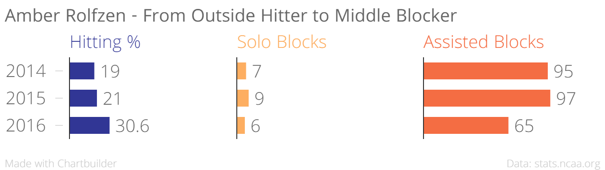
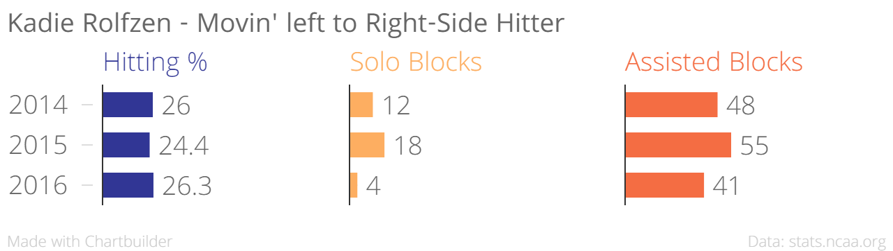
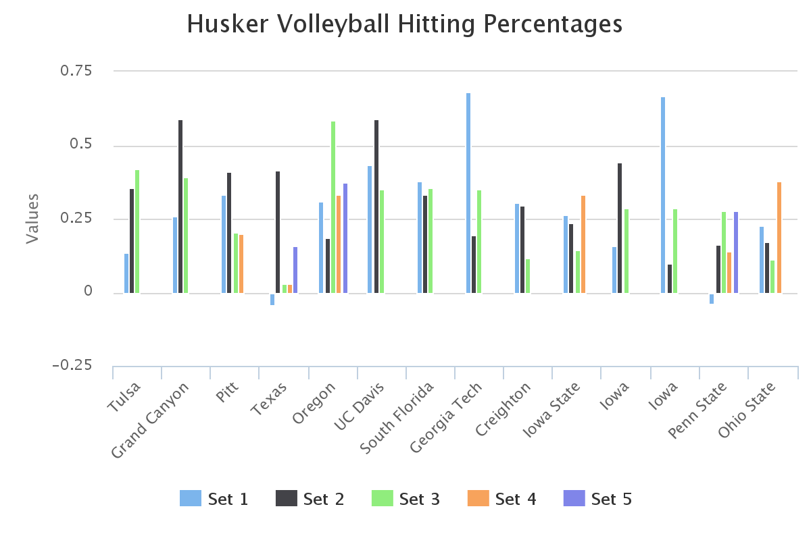

The Rolfzens
Amber
Life in the middle.
The switch from Outside Hitter to Middle Blocker this year has allowed Amber to increase her hitting percentage and continue to be a dominant blocker. While her number of attacks will go down in order to spread the wealth around the offense, the efficient 30% hitting percentage is the result of different looks from the middle.
Kadie
To the left, now go right.
Switching from Outside Hitter (left side of the court) to Right-side Hitter has allowed Kadie to get hits from more spots on the floor; for a more Kelsey Robinson-esque effect. While the transition to the right side will take some geting used to, look forward to big hits from Kadie in both the front and back rows.
The switch also gives Kadie a chance to showcase her defensive talents. Notice the number of assisted blocks is almost on par with numbers from previous years only halfway through this season. The right side also gives more opportunities for digs.
Setting Things Up
Kelly Hunter
On the list to assist.
The offense runs through Kelly Hunter. Named a team captain as only a sophomore, the setter is known for keeping opposing teams guessing and keeping all of her teammates involved. Of the Husker's 785 total assists this season, Hunter has been responsible for 676 of them. She will only get better the more playing time she gets, look for her to make an even bigger impact the second half of the season.

A look at the season so far.

Teamwork
This last week, the Huskers have shown that they can play with, and win against, the best. For the rest of the season, they will be working on staying consistent. The NCAA Tournament is still half a season away, but there's no doubt the Huskers are thinking about the road to Omaha each and every day.